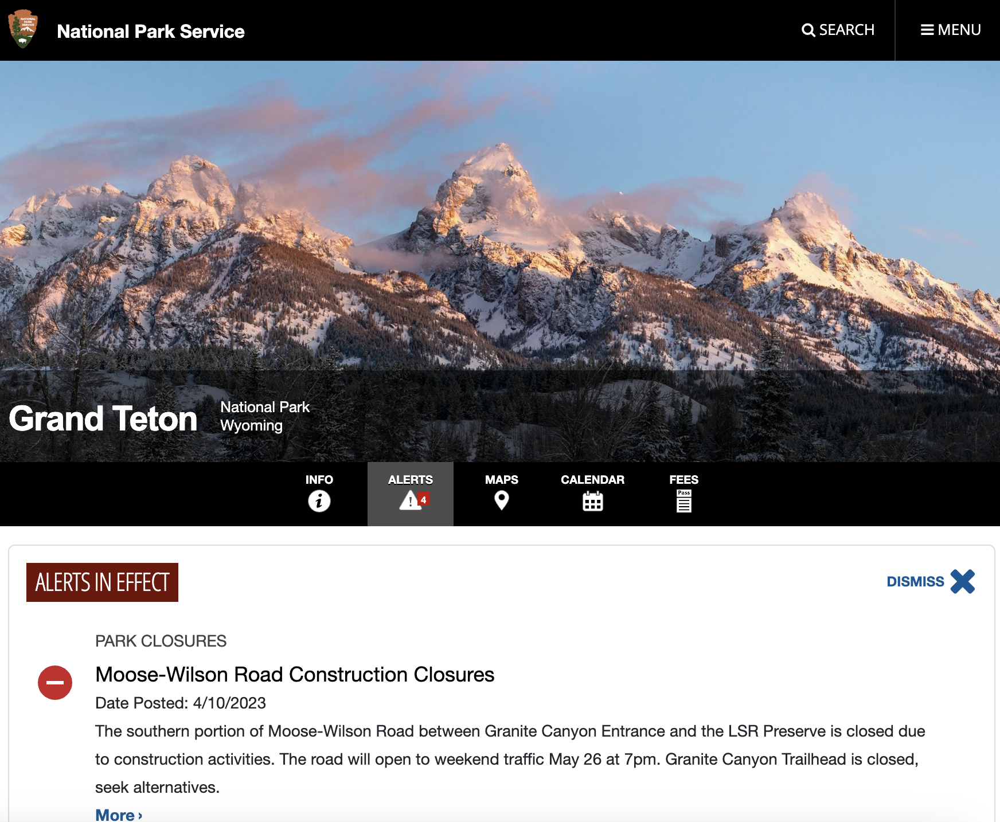
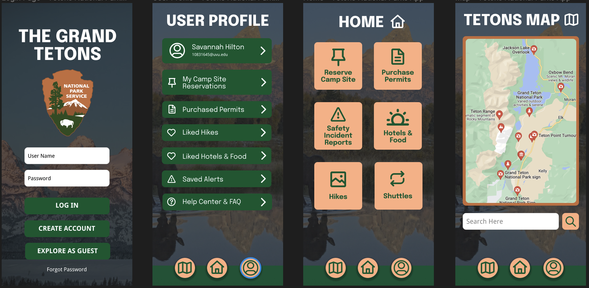

For my DGM 2270 class we were tasked with the redesign of a national parks website. In 2019 I went backpacking in the Grand Tetons with my Dad and that inspired me to redesign the site for The Grand Teton National Park. The National Parks are beautiful, inspiring locations that are ideally easily accessible to the public. In the same vein, an app for navigating the parks should be easily accessible and user friendly.
My objective was to create a mobile app that is simple, intuitive, and extremely easy to use. The typical user I had in mind ranged from the quick, on-the-go, youthful hiker to the older explorer just trying to enjoy the nature around them. Both would need an easy to use interface.
I recognized that I would need to include all that is most important on the original site, so I headed over to the url https://www.nps.gov/grte/index.htm that would simply explain the required features of a national parks app. I noted the alerts tab, which I hadn’t considered before, and I thought about the need for the ability to reserve campgrounds and obtain permits.
I next did some sketches of what would make for a good national parks mobile app. I opted towards the use of icons to make each action that can be taken to be clear and obvious. A couple iterations got me where I needed to be.
Finally I created my designs in Figma. They turned out clear, user-friendly, and aesthetically pleasing. I strive to make them from the perspective of a hiker who needs simple and clear information at a glance.
I learned the importance of doing your research and getting inspiration from similar sources. I learned the value of sketching beforehand. I also learned how to view things from the user’s perspective. I encourage other UX designers to do the same.